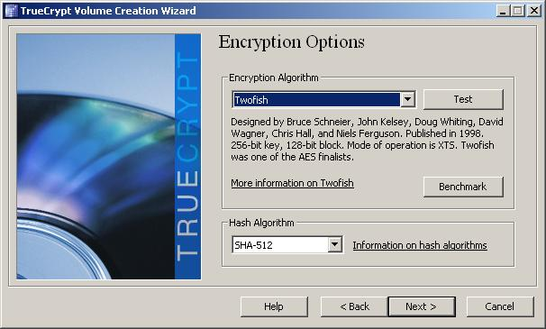

|
Encryption... such a hyped up word for what it really is. I won’t deny how useful it is but everyone thinks encryption will save the day and make the best security. It won’t. But it will help preventing people who know nothing of cryptanalysis from reading your emails or damaging your system... and if you use the right encryption with a good passphrase, it could also prevent government agencies with advance cryptanalysis technologies to get your data. I kinda like that idea.
This tutorial will show how to use TrueCrypt to encrypt a USB drive on the fly. You can also apply this knowledge to encrypt your harddrives but I wouldn’t recommend to use this software but something like a EncFS for linux or EFS for Windows. However I was looking for a multi-platform filesystem encryption for the USB key I use for university and I found this which does the trick.
It has a graphical front end but you can go through the CLI and do everything manually there, for simplicities sake I will guide you through the GUI and explain every step of the process and what the cryptography gibberish means.
For starters, go download TrueCrypt for your platform and install it. Unfortunately this is not considered ‘open-source’ from the Open Source Initiative even though the code itself is open to the public... don’t ask, just some good old fashioned open-source bureaucracy. You can find TrueCrypt here.
Once it’s installed (I’m assuming you know how to install software), insert an EMPTY USB flash drive... EMPTY. YOU DON’T WANT ANY OF YOUR FILES ON THIS DISK SO MAKE A BACKUP IF YOU’RE PLANNING ON DOING THIS ON A KEY YOU USE REGULARLY, PERFORMING MY TUTORIAL WILL WIPE CLEAN YOUR USB DRIVE. Yes, you can image me yelling at you the previous sentence. Now that the large capital letter warning has been issued; insert your USB key (In my case I’m using a 16 gig Sandisk Cruzer) and double click on the TrueCrypt icon and you will be presented with the below screen:
Please ignore the list of drive letters and click on the “create volume” button in the middle left of the screen.
There are a few options here. The TrueCrypt documentation say that newbies (i.e. you the reader) should use the “Create an ecnrypted file container”. I don’t like that so I chose the “Encrypt a non-system partition/drive”.
Let me explain: What we’re about to do is to encrypt a filesystem. A filesystem if you don’t know is a method of organizing data in a human readable format. So when you double click on your drive letter (lets take C:\ for example) the computer reads that database tables and shows it to the user. The filesystem will also determine HOW the computer will access these files (typically via an index). There’s quite a lot more info on this but you don’t really need much more knowledge on this to encrypt your disk drive.
What the first option does is not encrypting the actual filesystem but creating a very virtual file system where you store your data in. When you want to read/write the file system, you mount this file instead of the USB key. Now Windows (of course) will still mount the USB key AND mount a separate file system thus using two drive letters instead of one. Which was one of the reasons why I wanted to avoid using the first option. Linux however just saw one drive and mounted it as one drive instead of two... go figure. But anyway, go with the second option and press next.
Press the “select drive” button.
Here is where you want to select your drive. Now the TrueCrypt software actually seems bugged as it is also showing my C:\ …. which you really do not want to encrypt. That would be bad... but nonetheless, select your USB drive and press Ok and then “next”.
Now since I told you to make a backup of your drive, keep the default option selected (Created encrypted volume and format it) and press Next. The reason why I told you to do that and not select the second option and encrypt your files with the drive is when TrueCrypt will format the drive, it will write random data all over the disk so like that if someone does a filesystem dump, i.e. if someone is reading the raw data off the drive, he won’t be able to pinpoint where files are stored. Some of you might be scratching your head at that last statement. When a system formats a disk drive or partition, it will write a bunch of null bytes (binary 0) to the data sections of the partition. So if you would dump a usb key’s file system, you would see the header segments (which the database table will point to) and then bunch of zeroes until it meets data that has been written. So what TrueCrypt (and every other filesystem encryption methods) will do is write random data in those places so that you can’t easily tell where data is stored. Anyway, press next.

Here is the fun part. Choosing the encryption and hash algorithm. Now there are various reason as to choose one or another. Here I chose to use Twofish because I’m a big fan of the fish family of encryption methods (blowfish, threefish etc) and it provides an almost equal encryption and decryption speed. AES is also a very good choice but is slightly slower in the encryption speed then two fish. If that doesn’t make sense, substitute the words “encryption speed” for “write speed” and “decryption speed” for “read speed”. You can also combine AES and twofish which offers a double encyrption but it will severely impact performance. Choose whatever you want, but I can say for general purpose, Twofish is excellent and AES follows up.
Fun fact: AES is what the American Government uses to encrypt their top secret files.
Then the hash algorithm. I chose SHA-512 as I’m a big fan of the SHA series... and also because I don’t know the other two too well. What this will do is it will encrypt your password and store it in the filesystem. You may be asking: “Wait! what?! Store MY password in the USB drive”. Yes. Because when you type your password, it needs to be able to compare your password with something. So it will take your plaintext password, hash it and compare the values with what it has. So no worries, your password is not stored in plaintext. Once you made your selection, press next.
Press next again.
And now to choose a password. You see what the TrueCrypt developers wrote? Read it carefully. Okay, now read it again. Does it make sense? Because if you choose your password as “password” and someone tries to bruteforce your USB drive, don’t come complaining to me that what I told you in the first paragraph was a lie, because I will seriously punch you in the face. Choose a good password. Want an example of a good password, here’s one:
T|-|15I5@G00dPa55\/\/0|<D
See that? yeah. 25 characters, Alphanumeric, Symbols and both lower and upper case characters. Can you make sense of it? If you look carefully it writes out: ThisIsAGoodPassword. If you don’t know how to choose a good password, go find an online tutorial. Nuff’ Said. Press next once you typed your password (and for the sake of security, don’t check the “Display password’ checkbox if you’re in an public area... or even at home, never know who is watching).
Okay, this part is up to you. I chose yes for this because I might be carrying some ISO disk images or very large archives around and they can take more than 4 gigs. But if you intend to only to carry small files, I would suggest to select the no option as it will improve read/write performance. Press next.
You’re almost done! Keep the default filesystem and cluster values and start randomly waving your mouse around in the TrueCrypt window for a minute or so. TrueCrypt will gather some random data based off the pointer position for it’s encryption algorithm, so the longer you wave your mouse randomly, the better. After that you’re done looking like a moron, press the “start” button and let TrueCrypt do it’s job.
Once that’s done. You will be presented with the first screen and all you have to do is press the “Auto-mount Devices” button, enter your password, and you’re good to go!
|